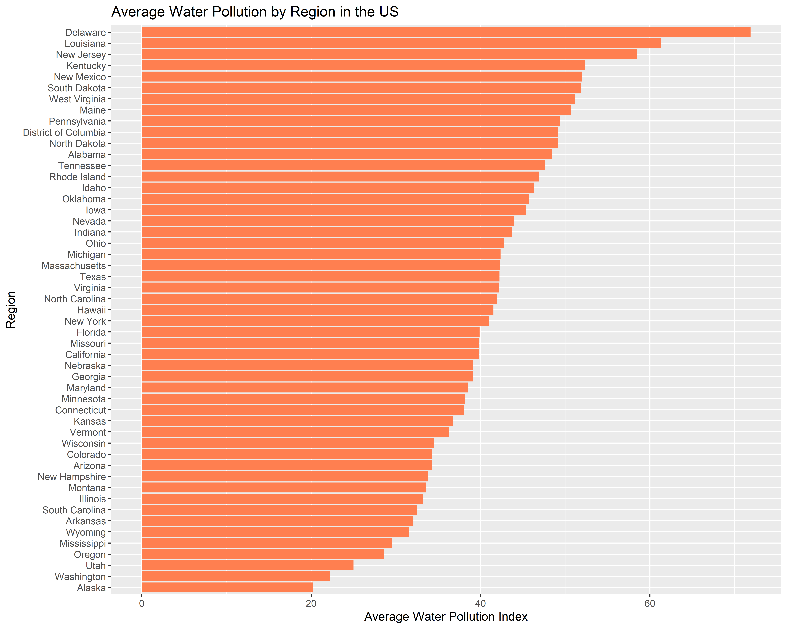
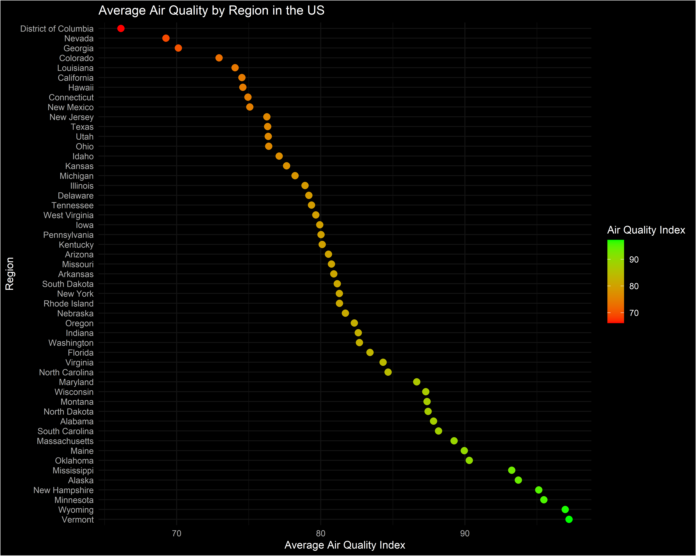

This document presents an analysis of air and water quality data on a global scale. The dataset we are using is from kaggle and presents information on the air quality air and water levels from many notable cities around the world. The information was collected from user votes of people around the world through Numbeo. This dataset this contains nearly 4000 records. It is important to mention that although a wide range of data from many different cities is used for this dataset, not every city in a country is mentioned so information on an specific state or region is not definitive. Moreover, due to this being a very large dataset, the graphs are filtered with a specific focus on the United States for the sake of this project. This analysis is to uncover patterns and insights into environmental quality indicators, particularly air quality and water pollution levels.
City Region Country AirQuality
1 New York City New York United States of America 46.81604
2 Washington D.C. District of Columbia United States of America 66.12903
3 San Francisco California United States of America 60.51402
4 Berlin Germany 62.36413
5 Los Angeles California United States of America 36.62162
6 Bern Canton of Bern Switzerland 94.31818
WaterPollution
1 49.50495
2 49.10714
3 43.00000
4 28.61272
5 61.29944
6 12.50000
[1] 0
Data Wrangling
The data is then prepared for analysis through a series of wrangling steps. This includes standardizing country names, handling missing values in the ‘Region’ column, and filtering the dataset to focus on the United States. Additionally, the ‘AirQuality’ variable is categorized into ‘Good’, ‘Moderate’, and ‘Poor’ based on predefined thresholds. The dataset is also rearranged in descending order based on air quality to facilitate easier analysis.
City Region AirQuality WaterPollution AirQualityCategory
1 Juneau Alaska 100 25 Good
2 Burlington Vermont 100 30 Good
3 Dover Delaware 100 50 Good
4 Fargo North Dakota 100 0 Good
5 Helena Montana 100 50 Good
6 Norman Oklahoma 100 25 Good
City Region AirQuality WaterPollution AirQualityCategory
1 Ogden Utah 80.55556 0.0 Good
2 Farmington New Mexico 95.00000 50.0 Good
3 Moses Lake Washington 75.00000 0.0 Moderate
4 Oakland Tennessee 100.00000 0.0 Good
5 Rochester Minnesota 80.55556 62.5 Good
6 Alexandria Louisiana 100.00000 50.0 Good
# Summarize data by Country and Regionsummary_by_country_region <- air_quality_data %>%group_by(Country, Region) %>%summarize(AverageAirQuality =mean(AirQuality, na.rm =TRUE),AverageWaterPollution =mean(WaterPollution, na.rm =TRUE),.groups ='drop'# drop the grouping structure after summarizing )# View the summary tibblesummary_by_country_region
# For this project, let's showcase information for US states. # Filter for United States and summarize data by region.# In RStudio preview the data might not be clear but it looks better in the picture from ggsave. us_region_summary <- air_quality_data %>%filter(Country ==" United States of America") %>%group_by(Region) %>%summarize(AverageWaterPollution =mean(WaterPollution, na.rm =TRUE)) %>%arrange(desc(AverageWaterPollution))# Creating and assigning the plot to a variableus_water_pollution_plot <-ggplot(us_region_summary, aes(x =reorder(Region, AverageWaterPollution), y = AverageWaterPollution)) +geom_bar(stat ="identity", fill ="coral") +coord_flip() +labs(title ="Average Water Pollution by Region in the US",x ="Region",y ="Average Water Pollution Index")# Displaying the plotus_water_pollution_plot

# Save the plot in the specified directory using 'here'ggsave(here("us_water_pollution_plot.png"), plot = us_water_pollution_plot, width =10, height =8, dpi =300)
Some noticeable trends that arise after analyzing the average water quality in US states include:
There’s a clear link between higher urban and industrial activities and lower water quality in states.
Compared globally, even the poorest water quality in the U.S. is relatively good, with even the highest pollution levels well under 90. This suggests a better overall water quality in the U.S.
# Filter for United States and summarize data by regionus_region_air_quality <- air_quality_data %>%filter(Country ==" United States of America") %>%group_by(Region) %>%summarize(AverageAirQuality =mean(AirQuality, na.rm =TRUE)) %>%arrange(desc(AverageAirQuality))# Creating a dark theme scatter plot focusing on Air Quality in the USus_air_quality_plot <-ggplot(us_region_air_quality, aes(x =reorder(Region, -AverageAirQuality), y = AverageAirQuality, color = AverageAirQuality)) +geom_point(size =3) +scale_color_gradient(low ="red", high ="green") +# Green to red gradient ggdark::dark_theme_minimal() +coord_flip() +labs(title ="Average Air Quality by Region in the US",x ="Region",y ="Average Air Quality Index",color ="Air Quality Index")us_air_quality_plot

# Save the plot using ggsaveggsave("us_air_quality_by_region.png", plot = us_air_quality_plot, width =10, height =8, dpi =300)
Some noticeable trends that arise after analyzing the average air quality in US states include:
Once again, there is a clear link between population density and industrialization when it comes to poor air quality.
States with more trees tend to exhibit better air quality. This is exemplified by states such as New Hampshire and Alaska, where dense forests contribute to superior air quality.
This dataset focuses mainly on major cities so it provides insights into air main quality trends, but is not all-encompassing. Not every city in america is represented and so the data may be slightly skewed.
Conclusion
This document serves as a exploratory analysis of environmental quality data, emphasizing the importance of assessing and understanding air and water pollution levels for better environmental management and policy-making. Although this project was fun and overall very easy, the hardest part about this project was logical way in which the values in the data work. For water pollution, the higher the number the worse the water quality since it is scaled by pollution. For air quality, the higher the number the better the air quality. This initially caused some confusion and logical errors asopposed to syntax errors, but these issues were soon resolved and I soon had a clearer understanding of the data.